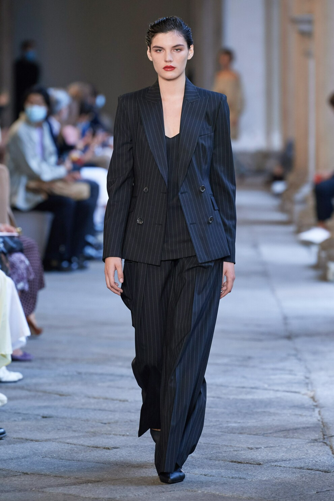
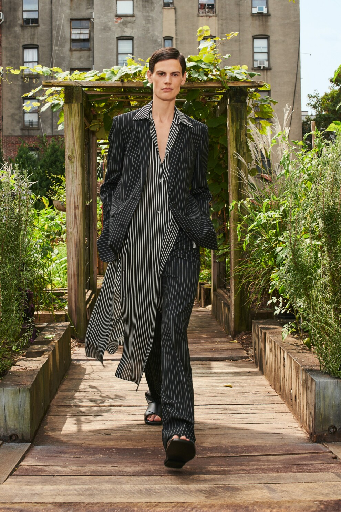

Этой весной тренд на полосатый принт вновь вернулся в коллекции к брендам. Дизайнеры предложили платья с вертикальными полосками, джемперы, украшенные морским узором, и деловые брючные костюмы в тонкую полоску. Строгие темные жакеты и брюки, которые были особенно популярны в 1990-х годах, в новом сезоне весна-лето 2021 получили новую жизнь. Дизайнеры принялись экспериментировать с кроем, оттенками и шириной полос, предлагая как варианты для рабочих встреч, так и более неформальные ансамбли.
Брючные двойки, украшенные строгими тонкими полосками, – классический и вневременной костюм. Если ранее подобный дизайн предпочитали супермодели Синди Кроуфорд и Эмбер Валлетта , то сейчас костюмы в мелкую полоску носят Белла Хадид, Кайя Гербер и Эмили Ратаковски. Пожалуй, один из самых элегантных вариантов для деловых встреч показали Max Mara – бренд представил костюм-тройку в темно-синем оттенке, состоящий из широких брюк, приталенного жакета и топа в тон образу, вместо жилетки. Еще один брючный ансамбль представили Michael Kors Collection. Дизайнер сделал ставку на строгий графитовый костюм с белыми вертикальными полосками, который можно обыграть с помощью в оздушной асимметричной блузы для более расслабленного образа. Для девушек, которые находятся в поиске нетривиальных брючных костюмов, стоит обратить внимание на коллекцию Ports 1961.
Источник: VOGUE.UA